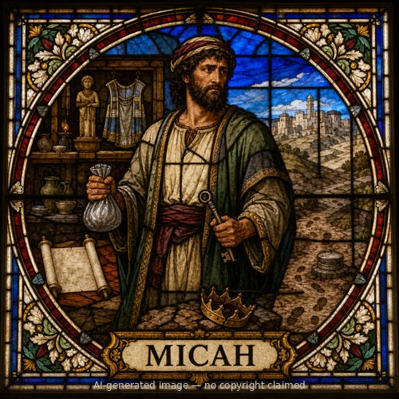

Micah (M)
First named in Jeremiah 26:18
Micah, from the town of Moresheth in Judah, prophesied during the reigns of Jotham, Ahaz, and Hezekiah, contemporary with Isaiah, and confronted the same corruption Amos had denounced in the north — corrupt rulers, false prophets who prophesied for money, and a people who thought God's presence guaranteed their safety (Micah 1:1; 3:1-12). His warning that Jerusalem would become "a heap of ruins" was serious enough that, decades later, Hezekiah's fear of the LORD in response to it was cited in Jeremiah's own defense at his trial, as proof a true prophet's hard word could be received rather than punished (Jeremiah 26:18-19). Micah is best known for two passages reaching far beyond his own day: his prophecy that a ruler over Israel would come from the small town of Bethlehem, "whose origin is from of old, from ancient days" (Micah 5:2), which the chief priests and scribes quoted to Herod as the Messiah's birthplace (Matthew 2:5-6); and his summary of what true religion requires — not endless sacrifices, but "to do justice, and to love kindness, and to walk humbly with your God" (Micah 6:6-8). Micah's book closes in confident hope in God's compassion, who "will again have compassion on us" and cast Israel's sins into the depths of the sea (Micah 7:18-19).
Thought for Today
Micah’s story teaches us about social justice; may we look to Jesus, whose grace and truth never fail.
References: Jeremiah 26:18; Micah 1:1
Genealogy
Father
—Mother
—Spouse(s)
—Children
—Connections
- Prophesied of Christ (Matthew 2:5-6)
Other people named Micah
